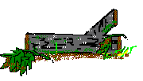

RECETAS
- Colmenillas Rellenas
- Corona de Otoño
- Champiñones Rellenos
- Chipirones Rellenos de Setas
- Dorada al Boletus
- Espaguetis con Colmenillas
- Guiso Campestre con Tricolomas
- Gulasch Húngaro
- Hongos y Vegetales en tosta en su Salsa
- Huevos Escalfados con Hongos
- Lomitos de Bacalao con Hongos y Almejas al aroma de Cava
- Macarrones con Níscalos
- Magret de Pato con Senderuelas
- Merluza Rellena de Setas
- Mero al Horno con Setas y Tomillo a la Pimienta Verde
- Pollo Relleno Trufado
- Pudding de Hongos
- Pudding de Setas con Verduras
- Ragoût de Niscalos
- Setas de Cardo asadas al horno
- Setas Salteadas
- Solomillo de Ternera al Foie son salsa de Hongos y Trufas
- Sopa de Hongos con Virutas de Jamón Iberico
- Suflé a las Trufas
|

|